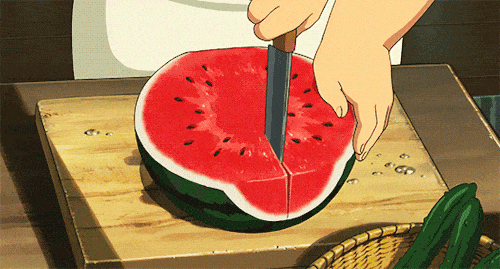

Receita de Geléia da Casca da Melância
Uma geléia deliciosa e refrescante feita com cascas de melancia.
Tempo de preparo
-
Total: 1 hora e 30 minutos
-
Preparo: 30 minutos
-
Cozimento: 1 hora
Ingredientes
- Cascas de 1 melancia (parte verde removida)
- 2 xícaras de açúcar
- 1/2 xícara de água
- Suco de limão
- 1 colher de chá de pectina (opcional)
Modo de preparo
-
Corte as cascas: Corte as cascas de melancia em pedaços pequenos.
-
Misture: Em uma panela, misture as cascas, o açúcar, a água e o suco de limão.
-
Cozinhe: Cozinhe em fogo médio, mexendo, até que as cascas estejam macias (cerca de 1 hora).
-
Opcional: Se desejar, adicione a pectina e cozinhe por mais 10 minutos.
-
Despeje: Despeje em frascos esterilizados e deixe esfriar antes de armazenar na geladeira.